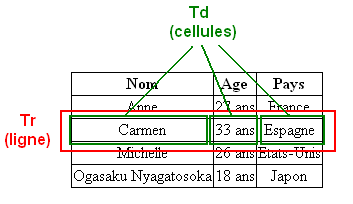

Un tableau simple
La premiere balise a connaitre est "table" et "/table" pour indiquer le debut et la fin d'un tableau. Elle est de type bloc.
A l'interieur de cette balise, on met d'autres balises :
"tr" et "/tr" pour le debut et la fin d'une ligne, "td" et "/td" pour le debut et la fin d'une colonne.
En HTML, on construit le tableau ligne par ligne ou on indique le contenu des differentes colonnes.

Voici en excusivite pour vous un magnifique tableau :
| Bonjour | Hello | Hola | Kon'nichiwa |
| Au revoir | Good bye | Adios | Sayonara |
| Merci | Thank you | Gracias | Arigato |
On met des bords avec "border" en CSS sur les "td" :
| Bonjour | Hello | Hola | Kon'nichiwa |
| Au revoir | Good bye | Adios | Sayonara |
| Merci | Thank you | Gracias | Arigato |
Puis on ajoute a "table" "border-collapse" suivi de "collapse" pour fusionner les bordures ou "separate" pour les separer (par defaut).
| Bonjour | Hello | Hola | Kon'nichiwa |
| Au revoir | Good bye | Adios | Sayonara |
| Merci | Thank you | Gracias | Arigato |
On definit la ligne d'en-tête comme precedemment dans une ligne de "tr" mais les colonnes sont encadrees de "th" et "/th" et non plus de "td".
Avec notre exemple :
| Francais | Anglais | Espagnol | Japonais |
|---|---|---|---|
| Bonjour | Hello | Hola | Kon'nichiwa |
| Au revoir | Good bye | Adios | Sayonara |
| Merci | Thank you | Gracias | Arigato |
On definie ensuite le titre du tableau a l'aide de la balise "caption" que l'on place au tout debut, avant l'en-tête.
| Francais | Anglais | Espagnol | Japonais |
|---|---|---|---|
| Bonjour | Hello | Hola | Kon'nichiwa |
| Au revoir | Good bye | Adios | Sayonara |
| Merci | Thank you | Gracias | Arigato |
On peut changer la position du titre avec la propriete CSS "caption-side" suivi de "top" ou "bottom".
Un tableau structure
La premiere methode pour faire des tableaux plus complexe est de les diviser en trois:
- en-tête : "thead" et "/thead"
- Corps du tableau : "tbody" et "/tbody"
- Pieds de tableau : "tfoot" et "/tfoot"
Il est conseille d'ecrire les balises dans cette ordre : thead, tfoot, tbody. Reprenons notre exemple precedent :
| Francais | Anglais | Espagnol | Japonais |
|---|---|---|---|
| Francais | Anglais | Espagnol | Japonais |
| Bonjour | Hello | Hola | Kon'nichiwa |
| Au revoir | Good bye | Adios | Sayonara |
| Merci | Thank you | Gracias | Arigato |
La deuxieme methode est la FUSION !
Le but est de fusionner deux cellule. Pour cela, il faut ajouter un attribut a la balise "td" :
- "colspan" pour la fusion de deux colonnes (fusion horizontale)
- "rowspan" pour la fusion de deux lignes (fusion verticale)
On peut modifier l'alignement vertical du texte des cellules de tableaux avec la propriete "vertical-align", c'est la même que pour la mise en page.